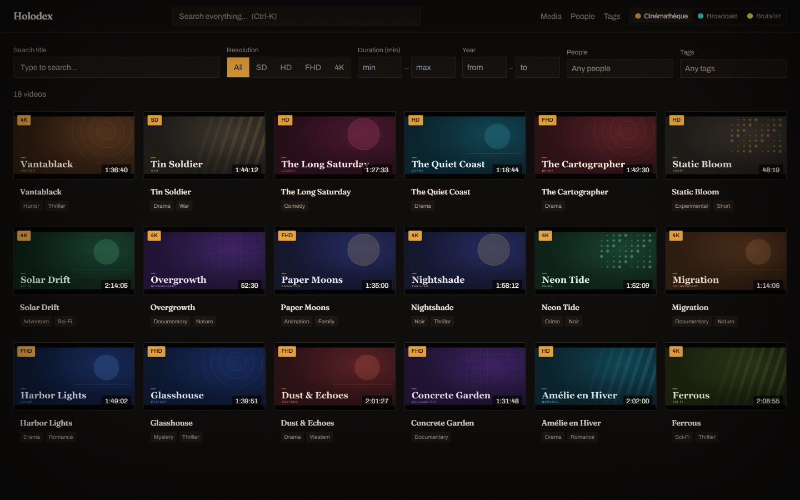
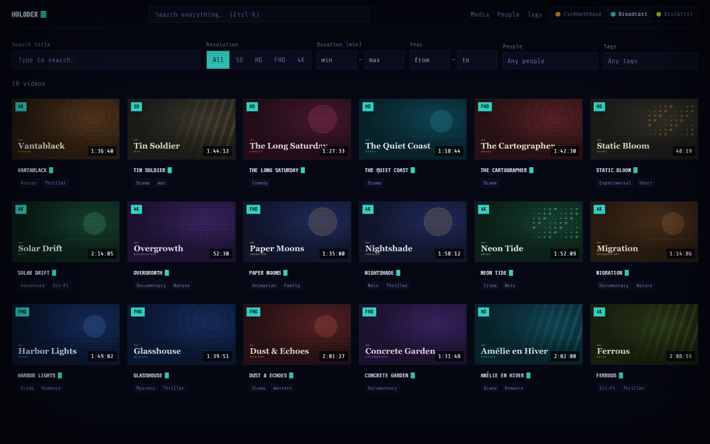
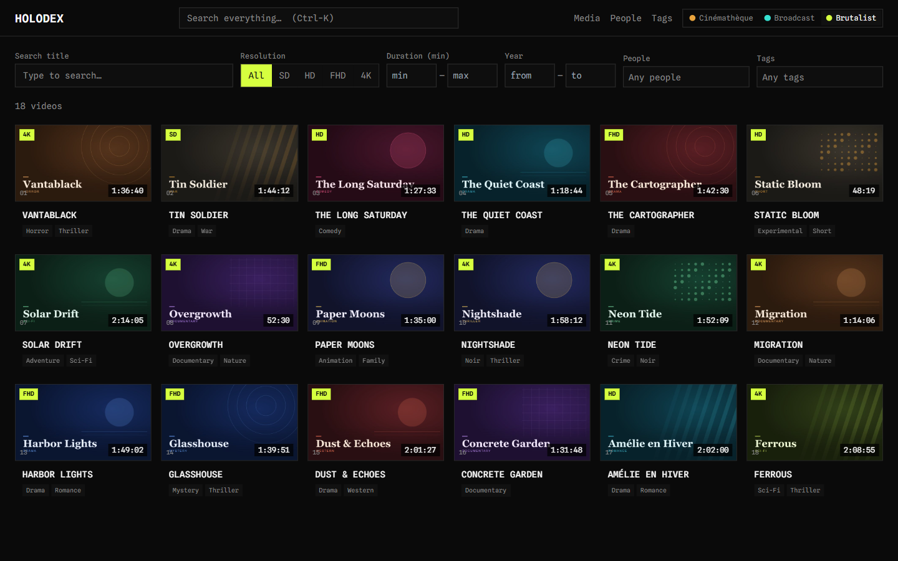
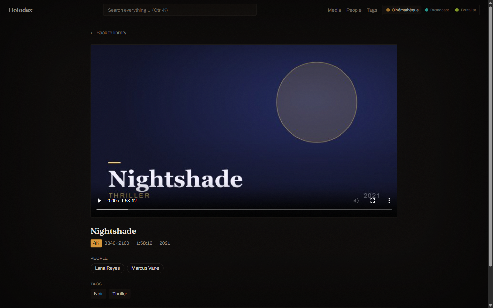
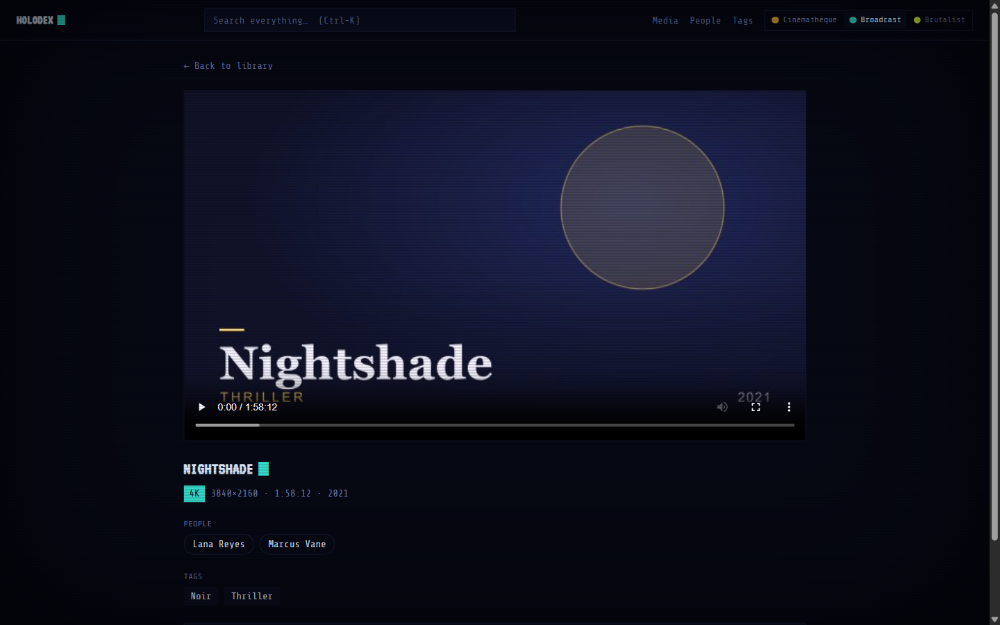
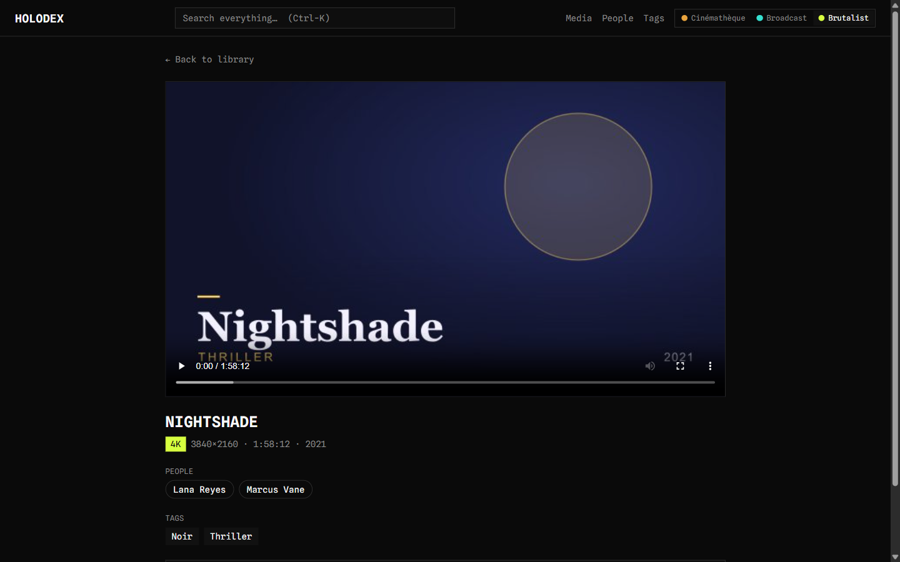

Your videos, indexed by
their own metadata.
Point Holodex at a folder of .mp4/.mkv files and it builds a fast,
good-looking web library from the tags already inside them — no naming conventions, no manual
database, no internet, no telemetry.






Real screenshots — the same components, re-skinned by a token swap. Currently: Cinémathèque.
One library, three skins
The UI is built on semantic design tokens, so the whole look switches from the header with zero restyling — fonts bundled offline, all WCAG AA.
Cinémathèque
Refined film-archive. Fraunces serif, warm grain and vignette, ember accent, letterbox bars on every card.
Broadcast
Retro-futurist CRT. VT323 bitmap type, scanline wash, cyan accent, uppercase titles with a blinking caret.
Brutalist
Raw utilitarian catalog. Spline Mono, hairline grid, zero radii, acid-lime accent, 01/02 index counters.
What it does
Everything is driven by the metadata embedded in your files — the source of truth.
Tags are the truth
Title, cast, genres, resolution and dates read from each file's own container tags via layered exiftool + ffprobe — never the filename.
Incremental indexing
Scans on startup, watches for changes live, and only re-reads files whose size or mtime changed.
Cover art, two ways
Embedded poster art is extracted instantly; the rest get a throttled background frame thumbnail.
Real search & filters
Full-text search with diacritic folding, plus faceted filters for resolution, duration, year, people and tags — all in shareable URLs.
Plays in the browser
Inline HTML5 player with HTTP Range seeking, and a panel showing exactly what each file's encoder embedded.
Self-hosted & portable
A single pure-Go binary in one multi-arch image (amd64 + arm64) for NAS and ARM home servers.
Quick start
Just Docker and one compose file — no source tree or toolchain.
# 1. Point Holodex at your library (defaults to ./media) export MEDIA_PATH=/srv/media # 2. Run the prebuilt image from GHCR docker compose -f docker-compose.prod.yml up -d # 3. Open the library http://localhost:7800
Your library is mounted read-only; index, thumbnails and config live in a named volume.
Roadmap
- Automatic metadata-driven indexing
- Search, facet filters, people & tags
- Tiered cover-art pipeline
- In-browser player, three skins
- MCP server for AI assistants
- Sort, "recently added", keyboard nav, responsive
- Metrics, System Activity, field mapping
- IMDB/TMDB People enrichment (provider preview)
- People/tag aliases & hierarchy
- Opt-in writeback to source files
- Hover-preview trailers